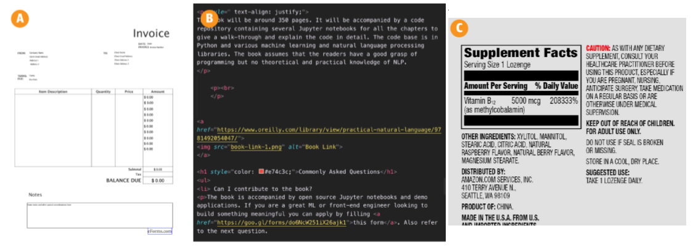
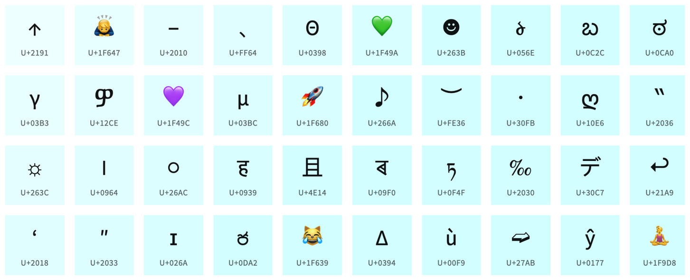

2.2 Text Extraction and Cleanup
Pull words out of HTML and PDF, then fix encoding and boilerplate.
These notes walk through the lecture slides. The original deck is unchanged; use (slides) on the course hub if you want that PDF.
1. Pull the words out first
Acquisition gives you a file, a URL, or a scan. That is not yet text a tokenizer can use.
Text extraction is taking the human language out and throwing away the rest: tags, headers, page numbers, nav bars, image bytes. Cleanup is making that string usable: encoding, Unicode, spelling, format-specific junk.
This step is slow and it is application-dependent. A bad extract poisons every later box in the pipeline. Lab 2 is this note in code.

2. HTML: parse, do not regex the whole page
A typical page is a tree. The words you want sit in a few nodes. On a Stack Overflow question page, the question and the answers have their own tags and classes. Use those, then drop scripts, ads, and chrome.
Do not write a general HTML parser. Use Beautiful Soup or Scrapy. They give you the tree, CSS selectors, and encoding help.
What you keep depends on the job:
| Keep | Drop (usually) |
|---|---|
| Title, question, accepted answer | Nav, footer, related-links sidebar |
| Article body | Cookie banners, share widgets |
| User comment text | Tracking pixels, JSON-LD you do not need |
Boilerplate is the repeated template around the article. If you leave it in, "Home", "Subscribe", and "Cookie policy" become high-count tokens and the model learns the site chrome, not the document.
3. Encoding and Unicode
Files lie about their encoding. open(path) with the wrong encoding turns é into é or into a crash.
Default to UTF-8. If a file is old Windows text, try cp1252 or latin-1 only after UTF-8 fails. In Python:
with open("page.html", "r", encoding="utf-8") as f:
raw = f.read()
Unicode normalization folds characters that look the same but are stored differently (é as one code point vs e + combining accent). Emoji and other symbols are Unicode too. If you strip anything outside ASCII you delete meaning: a green heart, a warning sign, a name in another script.

A practical rule: decode to Unicode once, normalize (NFC is the usual choice), then decide what to keep. Do not .encode("ascii", "ignore") unless you have a reason.
4. PDF and scans
Digital PDFs (exported from Word or LaTeX) have a text layer. pypdf or PDFMiner can pull it. Columns, headers, and footnotes often come out in the wrong order. Hyphenated line breaks (process- / ing) need a join rule.
Scanned PDFs are pictures. You need OCR (optical character recognition). Expect errors: rn for m, lost tables, garbage near logos.
Libraries are far from perfect. Some PDFs will not parse. That is a data problem, not a "you used the wrong import" problem. Print a page of raw extract and read it before you tokenize.
5. Spelling and system-specific junk
Spell correction is optional and it is not reliable. A dictionary checker will "fix" names and domain terms. If you build one, train it on this language and this domain, then spot-check.
Other cleanup that shows up in real feeds:
- HTML entities (
&→&) - soft hyphens and zero-width characters
- OCR letter swaps
- repeated whitespace and leftover markup (
<br>, markdown hashes)
Do the smallest cleanup that makes the next stage honest. Over-cleaning deletes signal (emoji in sentiment, #hashtag in tweets).
6. Practice
-
You extract a news article with Beautiful Soup and the word
Subscribeis among the top ten tokens. What did you leave in? -
Why is
text.encode("ascii", "ignore").decode("ascii")a bad default for tweets? -
A PDF of a two-column paper comes out as line 1 of the left column, line 1 of the right column, line 2 of the left column, … What went wrong, and what do you check before you train?